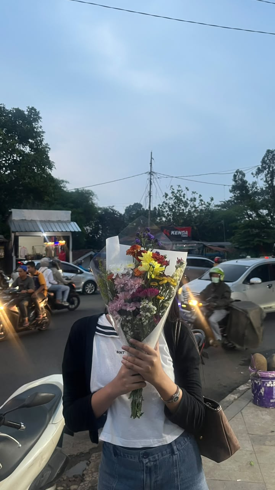

warning: contains cheesy feelings & bad jokes
Plot twist:
I met you.
Awalnya cuma ketemu, ngobrol, terus ketawa bareng.
Eh, kok sekarang kamu jadi orang favoritku? 🤨♡
big feelings
oops, it’s you
random laughs, silly talks
& a heart going “oh no”
made with a happy, slightly nervous heart · 2026
one hello
and look at us now
baru mulai kenal,
tapi kok berkesan banget?
chapter one: how it started
Hai, stranger. Kok jadi special?
Halooo, kamu! 👋🏻 Welcome to my tiny corner of the internet, alias tempat aku sok cool padahal salting. 🤭 Lucu ya, kita awalnya cuma dua orang yang baru ketemu. Terus ngobrol, ketawa, cerita hal random… and somehow, you became someone I look forward to seeing. Kalau kamu senyum pas baca ini, berarti aku berhasil. Kalau nggak, please pretend—aku udah effort ngetik sambil senyum-senyum sendiri. 😭
“Meeting you was my favorite plot twist.”
the beginning of something lovely
new memories
loading… ♡
masih awal banget,
tapi aku bersyukur ada kamu.
tiny things, happy heart

same little details, different kind of butterflies ♡
Mungkin buat orang lain ini cuma hal kecil. But to me, little moments with you are the kind I want to keep.
a memory with you
all the little things
that make you, you
your laugh, your stories,
your presence — all my favorites.
a list of things i like about you
Basically… everything.
- Your laugh — contagious, 10/10, no refund.
- Your random stories, even the ones with 27 plot twists.
- The way you make ordinary moments feel special.
- Your little habits, your smile, your whole you. Yes, all of it.
“I like your everything, even your silly things.”
no, i am not being dramatic (maybe)
let’s make more
little memories
one little moment today,
another cute story tomorrow.
serious mode: activated ♡
In case you ever wonder...
Aku bersyukur banget kita dipertemukan. Thank you for showing up in my life and bringing your own kind of warmth into it. Kamu nggak harus jadi siapa-siapa selain dirimu sendiri buat bikin aku senang. Kalau lagi capek, kamu juga boleh istirahat dan jadi diri sendiri di dekatku.
“I’m thankful life let me meet you.”
from my heart, not my notes app (okay, maybe both)
a letter for you
Dear you,
Aku tahu kita masih di awal cerita, and there is still so much to discover about each other. Tapi satu hal yang aku tahu: aku benar-benar bersyukur bisa bertemu kamu. Thank you for being here, for being you, and for becoming a lovely part of my days.
I like so many things about you — cara kamu ketawa, cara kamu cerita, hal-hal kecil yang mungkin kamu sendiri nggak sadar, sampai sisi random kamu yang bikin aku geleng-geleng sambil senyum. I like your whole package, including the little quirks that make you uniquely you.
Aku nggak mau cuma bilang kata-kata manis. I want to care for you sincerely, respect you, and show you through my actions. Dan kalau kamu bertanya seberapa besar rasa sayangku, jawabannya: aku mencintaimu dengan sepenuh hati. No half-hearted feelings, just me choosing to be genuine with you. ♡
with all my heart, ♡
a letter, just for you
Klik tombol bulat di pojok bawah untuk membalik halaman
If I could keep one thing,
it would be the chance to know you, again and again.